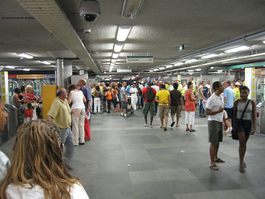
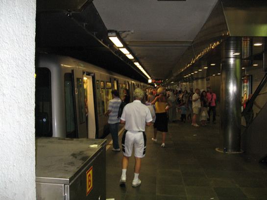
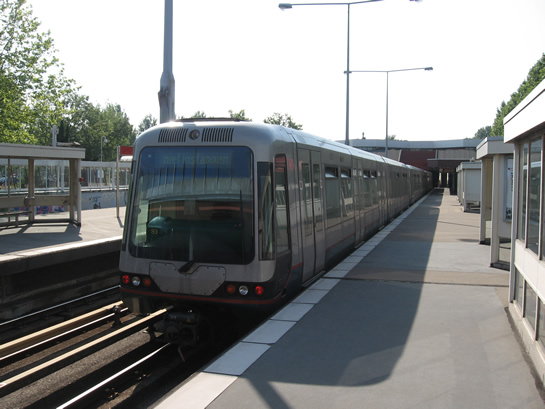
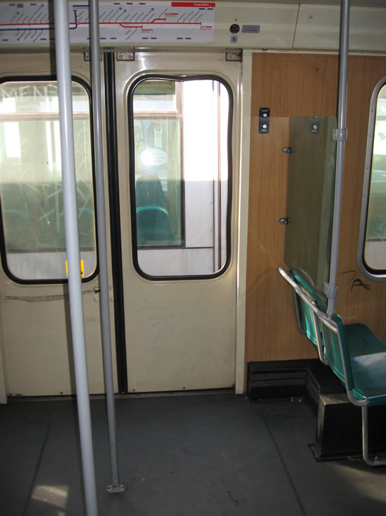

Drukte in metro door Zomercarnaval en meer...
- dinsdag 02 december 2008 21:19
- Geschreven door Simon
Zaterdag 28 juli was het de laatste dag van het Zomercarnaval in Rotterdam. Er kwamen in totaal 900.000 mensen op het evenement af. Bezoekers werd aangeraden gebruik te maken van het openbaar vervoer, danwel met de auto tot een P+R-locatie te reizen en vanaf daar de metro te nemen naar de stad. Als gevolg van het Zomercarnaval was het centrum van de stad onbereikbaar voor de auto. Flink wat tram- en buslijnen werden omgeleid; tramlijn 20 reed vandaag helemaal niet. De metro was het aangewezen vervoermiddel. Het spreekt voor zich dat het druk was in de metro, met name op station Beurs.
Alle tourniquets waren gesloten, en moesten dus worden geopend met een vervoerbewijs of een OV-chipkaart. Er werd personeel ingezet bij de meeste stations om metropassagiers hierbij te helpen. De hoeveelheid ondersteunend personeel was afhankelijk van de drukte.
Op de Calandlijn werd, op een enkele uitzondering na, met driewagentreinen gereden in alle richtingen. Er hebben ook extra wagendiensten gereden op de drukste momenten, deze stonden regelmatig op onder andere Kralingse Zoom sporen 2 en 4 geparkeerd. Op de Erasmuslijn reden alleen maar vierwagentreinen, om de 15 minuten op het traject Centraal Station-Slinge vv, en om de 15 minuten op het traject Centraal Station-Spijkenisse vv; dit is de normale materieelinzet op zaterdag met de huidige dienstregeling. Tijdens de drukkere tijden werden ook op de Erasmuslijn extra wagendiensten ingezet, eveneens vierwagentreinen. Tenminste twee van deze diensten reden leeg naar Centraal Station, om op de terugweg passagiers op te pikken.

Grote drukte op station Beurs; stationshal tussen de Calandlijn en Erasmuslijn.

Erasmuslijn, station Beurs perron 2 (richting zuid) omstreeks 17.00.

Kralingse Zoom perron 3, wagendienst 593. Hier stond, net als op perron 4, regelmatig extra materieel gereed.
Vandalisme in metrorijtuig
Omstreeks 17.45 strandde wagendienst 567, een driewagentrein Type T richting Ommoord, op station Kralingse Zoom perron 2. Een passagier had de politie gebeld omdat iemand een ruit van een deur van een metrostel had vernield. Het bleek te gaan om een ruit in deur 5 van rijtuig 5207, het achterste rijtuig. Dit rijtuig werd daarom ontruimd, en het metroverkeer richting Capelle aan den IJssel, Ommoord en Nesselande werd stilgelegd.
De vermoedelijke dader bleek nog aanwezig op het station. Rond 18.00 arriveerde de politie, die even later de vermoedelijke dader arresteerde. Ondertussen werd rijtuig 5207 losgekoppeld van de combinatie en was het de bedoeling dat de overige twee rijtuigen met passagiers verder zouden rijden tot de Capelsebrug. Vanaf daar zou de ingekorte wagendienst 567 weer terug in de dienst gaan, of inrukken naar remise 's Gravenweg. Uiteindelijk is heel wagendienst 567 ingerukt, het beschadigde rijtuig 5207 is apart ingerukt.
Om 18.15 werd het metroverkeer weer hervat op de Calandlijn, zij het nog met enige tijd vertraging. Er werd omgeroepen dat als gevolg van vandalisme, de metro's op de Calandlijn helaas onregelmatig reden. De vertragingen konden oplopen tot ongeveer een half uur.

Rijtuig 5207, deur nummer vijf. De ruit in de rechter deur, hier in het midden, is vernield. Op de achtergrond de eerder genoemde wagendienst 593.
Transporten RSG2-rijtuigen voor Randstadrail
In de nacht van 27 op 28 juli zijn er weer twee omgebouwde Type T-rijtuigen voor Randstadrail vervoerd, van remise Waalhaven naar de werkplaats Leidschendam. Als het goed is zijn er in de nacht van 28 op 29 juli eveneens twee rijtuigen overgebracht.